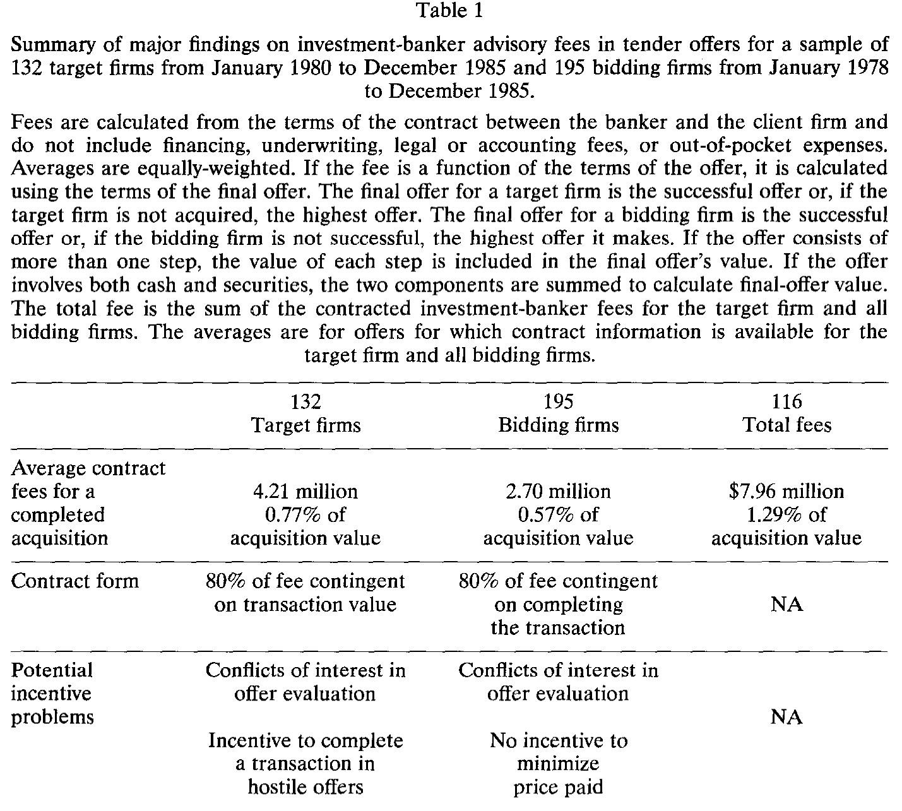
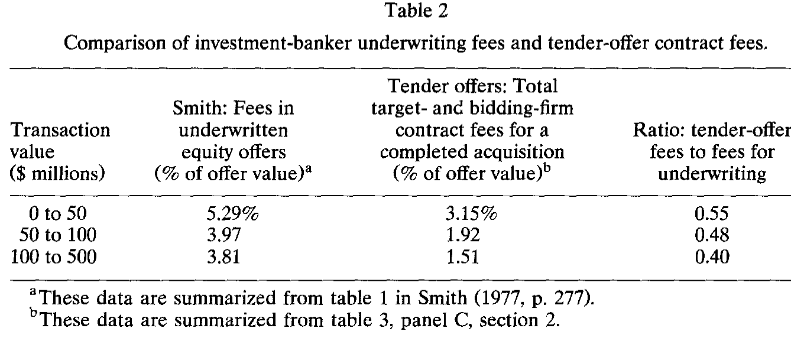
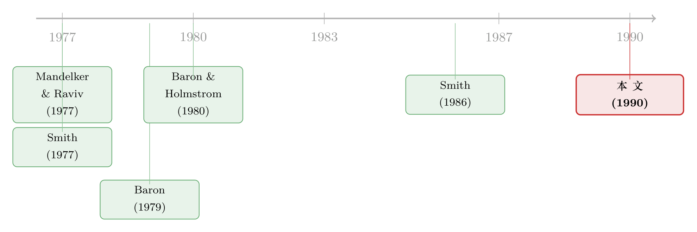

华尔街那张「一亿美元」的账单，被人翻开了底牌
本文读的是 McLaughlin (1990, Journal of Financial Economics)：把 195 起要约收购里投资银行与客户签的真实费用合同一份份翻开后发现，所谓「天价顾问费」其实平均只占交易额的 1.29%，远低于商业媒体渲染的水平；真正值得担心的不是费用的「高低」，而是费用的「形状」——超过 80% 的费用与交易能否完成挂钩，而这种或有契约一边激励银行家把活干成，一边在并购评估、敌意收购和出价高低上，埋下了银行家与客户之间的利益冲突。
1 一个被媒体放大的数字
1985 年，Pantry Pride 收购 Revlon，商业媒体报道投资银行拿走的费用「超过一亿美元」；《财富》杂志的一篇文章更是把好几桩费用过 1500 万美元的交易拎出来示众 [Petre (1986)]。在那个并购浪潮汹涌的年代，「投行靠并购吃得脑满肠肥」几乎成了不言自明的常识。
可常识往往是最经不起推敲的东西。
McLaughlin 在这篇 1990 年的论文里做了一件听上去笨拙、却几乎没人认真做过的事：她不去引用媒体上那些耸人听闻的数字，而是亲自跑到美国证监会 (SEC)，把要约收购 (tender offer) 中投资银行与客户公司签订的费用合同原件一份份调出来读。数据来源是 SEC 的 Schedule 14d 备案——按规定，要约收购必须提交这些文件。
于是，第一个反转就来了。
把所有「非顾问性质」的收费剔除掉——也就是融资费、承销费、收购后的资产剥离费、法律会计费、以及实报实销的差旅杂费——只留下纯粹的「并购顾问与管理服务」这一块之后，1980–1985 年间已完成交易的平均总顾问费只有 $7.96 百万美元，约等于交易额的 1.29%。
那一亿美元去哪了？以 Revlon 为例，那超过一亿的报道里，光是融资费和收购后卖资产的费用就占了 $78 百万美元。媒体把所有名目的钱一锅烩进「投行费」，再专挑最大、最成功、收费最高的几单来报道，自然就堆出了一个被严重扭曲的印象。
这里有一个容易被忽略的细节：费用不与交易额成比例。交易额从 50 百万美元以下涨到 10 亿美元以上时，目标方的顾问费从 $0.37 百万涨到 $10.44 百万——绝对值涨了，但占交易额的比例却从 1.65% 一路降到 0.34%。对超过 10 亿美元的巨型交易，总费用平均 $17.73 百万美元，占比反而只剩 0.60%。媒体只盯着分子（绝对金额最大的那几单），从不看分母。

Table 1
2 这些数字，到底可不可信？
读到这里，一个自然的疑问是：这些费用是从合同条款里推算出来的，而不是事后真金白银付出去的金额，会不会算得离谱？
McLaughlin 早就替我们堵上了这个口子。对于那些最终走向合并的交易，实际付给投行的报酬可以从合并的委托书 (proxy statement) 里查到。她拿这两个数字对账：
- 在 56 家有数据的目标公司里，按合同推算的费用与实付费用相差都在
20%以内，其中51家相差不到10%； - 在 33 家竞购方里，
32家的实付费用与推算费用相差不到5%； - 而且差额正负各半，平均误差为零。
换句话说，用合同条款推算费用，是个相当可靠的代理变量。地基打牢了，结论才站得住。
那么，跟别的投行业务比，并购顾问费算贵还是便宜？唯一一个有足够公开报酬数据可供对照的业务是承销 (underwriting)。McLaughlin 借用了 Smith (1977) 关于承销费率的经典数据，做了一个粗略但有意思的对比：在交易额相当的情况下，要约收购的顾问费大约只有承销费的一半。比如交易额在 1 亿到 5 亿美元区间，承销费占 3.81%，而并购顾问费只占 1.51%，比率是 0.40。

Table 2
这个对比只能做有限的推断。承销和并购顾问是两种完全不同的服务——承销商要承担提供资本、承受价格风险的职能，并购顾问不必。所以我们没法判断这两个费率「本该」是多少。它只是给了我们一个量级上的参照系：投行的并购费，并不是一个离谱的数字。
3 真正的关键，不在「多少钱」，而在「怎么付」
如果论文到这里就停下，那它不过是一篇「替投行辟谣」的文章。但真正关键的一步在于：McLaughlin 把目光从费用的水平移到了费用的结构上。
她发现，样本里绝大多数费用都是或有的 (contingent)——即只有在交易达成时才付。在一份典型的合同里，超过 80% 的费用与交易的完成与否挂钩。已完成收购的平均总费用是 $7.96 百万美元，可一旦交易没做成（"no transaction"），平均就只剩 $1.56 百万美元。这个巨大的落差在每一个交易额档位上都成立。极端情况下，有 18 家目标公司和 5 家竞购方的合同规定，费用全部取决于收购是否完成。
到这里，故事才真正有了张力。或有契约是一把双刃剑。
一方面，它显然在解决一个激励问题 (incentive problem)：客户当然希望银行家卖力地把交易促成，而把报酬挂钩到「交易完成」上，正是让银行家与客户利益绑在一起的最直接办法。这是契约理论里再标准不过的逻辑。
但另一方面——也是这篇论文最尖锐的洞察——同一份或有契约，在解决一个激励问题的同时，制造了另一个利益冲突。
4 两种契约，两种「埋雷」的方式
要看清这个冲突，得先看清费用合同的三种基本形态。McLaughlin 把它们分成：固定费 (fixed fees)、基于股数的费用 (shares-based fees)、和基于价值的费用 (value-based fees)。
- 固定费与交易结果无关，用得很少（目标方合同的
9.7%，竞购方合同的5.7%），且多用于非典型情形（比如银行家只负责出一封评估收购价值的「意见书」）。 - 基于股数的费用只与购入的股票数量挂钩，是竞购方最常用的形态（占竞购方样本的
79.7%）。 - 基于价值的费用同时取决于购入股数和支付的价格，是目标方的典型选择（占目标方样本的
72.6%）。
注意这个关键的非对称：目标方的费用通常挂钩交易价值，竞购方的费用通常挂钩股票数量。 这不是巧合，而正是冲突的来源。
先看目标公司这一边。它的银行家拿的是「基于价值」的或有费——交易做成、且做成的价格越高，银行家拿得越多。听上去和股东利益一致？可问题出在「评估收购是否划算」这件事上。当一桩要约收购摆在桌面上，目标公司的银行家本应客观地告诉股东「这个价钱到底值不值得卖」。但他的报酬几乎全压在「交易完成」上——哪怕这是一桩对股东并不够好的交易，银行家也有强烈的动机去促成它，甚至在敌意收购 (hostile offer) 中，他也有动力把公司「嫁出去」而不是帮股东把它留住。这就是 McLaughlin 说的「在敌意收购中有完成交易的激励」。
再看竞购公司这一边。它的银行家拿的是「基于股数」的费用——只跟买下多少股有关，与支付的价格无关。于是反转出现了：竞购方银行家没有任何动机去帮客户把收购价压低。客户最想要的是「用尽量低的价格买下目标」，可银行家的报酬对价格高低无动于衷，他只关心成交的股数。换句话说，在「该出多高的价」这个最烧钱的决策上，银行家和客户的利益是错位的。
这正是 McLaughlin 在表 1 里浓缩的那张「冲突地图」：目标方与竞购方都在「并购评估」上存在利益冲突，目标方多了一条「敌意收购中促成交易的激励」，竞购方多了一条「无动机压低收购价」。
这里值得停下来想一想：为什么目标方和竞购方会选不同的契约形态？一个合理的猜测是——目标方的核心服务是「估值与谈判溢价」，所以费用挂钩到交易价值上还算贴切；而竞购方真正在意的是「把股票收进来、把交易关上」，所以挂钩股数。但恰恰是这种「看似贴切」的设计，在另一个维度上把激励拧反了。契约从来不可能在所有维度上都完美对齐——这是机制设计里一个深刻而朴素的真相。
顺带一提，McLaughlin 还用 Wilcoxon 符号秩检验和回归确认了一个有趣的事实：在交易额相同的情况下，目标方的费用比竞购方高出约 30%（差异在 0.001 水平显著）。她给出的解释是：代表目标方可能更费时费力，要「用掉」银行家手里珍藏的潜在买家名单，目标方对交易时点的掌控也更弱、可能要为这份「紧迫感」额外付钱。不过她也诚实地指出，这背后假设了目标公司与银行家之间存在长期关系，而这种承诺正在弱化 [Hayes et al. (1983); Eccles and Crane (1988)]。
（关于「投行费用的形状如何反过来塑造收购的结局」这条线索，可参见《付钱的「形状」：一纸投行合同，如何写进了一场收购的结局》，那篇论文正是顺着 McLaughlin 这里埋下的伏笔往前走的。）
5 文献脉络
这篇论文坐落在一条「投资银行契约设计」的理论与实证脉络的交汇点上。
最早的源头是理论。Mandelker and Raviv (1977) 用经济分析的方式研究了最优承销契约的设计；紧接着 Baron (1979) 把激励问题正式引入投资银行契约，Baron and Holmstrom (1980) 进一步在信息不对称下讨论了新股承销契约里的委托与激励问题，Baron (1982) 则建模了投行咨询与分销服务的需求。这一系列工作奠定了「投行与客户之间存在委托代理冲突」的理论基础——但它们几乎都聚焦在新股发行/承销这个场景。

与此同时，Smith (1977) 在实证上给出了承销费率的权威数据，Smith (1986) 则对整个资本获取过程中的投资银行业务做了系统综述。
McLaughlin 的贡献，是把这条「契约—激励」的思路从承销搬到了并购这个当时几乎没有微观契约数据的领域，并且第一次用 SEC 的合同原件，把要约收购里投行费用的真实水平和真实结构摆到了台面上。理论早就预言了冲突的存在，而她用 195 份合同，让这些冲突第一次变得可观测、可量化。
6 评论与延伸（Q&A + 研究方向）
(a) 几个可能的疑问
Q：1.29% 这个数字，是不是因为剔除了融资费才显得「便宜」？会不会有「洗白」之嫌？
不算洗白，反而是更干净的口径。融资费、承销费补偿的是银行家承担资本风险的职能，这是一种与并购顾问完全不同的服务，不该混为一谈。而且 McLaughlin 指出，在她的样本里，明确地同时为顾问和融资服务签约的竞购方只有 8 家，融资费在这个样本里本就不是大问题。把不同性质的服务分开计价，正是严谨之处。她也提醒：1985 年之后，因为垃圾债和过桥贷款的兴起，融资费变得越来越重要——这是样本期之外的事。
Q：用合同推算的费用代替实付费用，可靠吗？
相当可靠。对账结果是：56 家目标公司里 51 家推算值与实付值相差不到 10%，33 家竞购方里 32 家相差不到 5%，且误差正负相抵、均值为零。这是这篇论文方法上最让人放心的一块。
Q：「或有契约制造冲突」——可这不正是契约理论说的「激励对齐」吗？怎么反而成了问题？
关键在于「对齐哪个维度」。把费用挂钩「交易完成」，确实对齐了「促成交易」这个维度；但它同时在「这桩交易到底好不好」「该出多高的价」这些维度上把激励拧反了。一份合同不可能同时对齐所有维度——这正是 McLaughlin 想说的：或有契约不是免费的午餐，它在解决一个问题的同时埋下了另一个。
Q：竞购方用「基于股数」的费用，目标方用「基于价值」的费用，这种区别是必然的吗？
不是必然，但有内在逻辑。目标方银行家的核心活儿是估值和争取溢价，挂钩交易价值算贴切；竞购方更在意「把交易关上」，挂钩股数更直接。但恰恰是这种「各自贴切」的设计，让竞购方银行家对价格漠不关心——这是论文最反直觉的一笔。
Q：那为什么客户们不去设计更好的合同，把这些冲突消掉？
论文没有正面回答这个问题，这也正是它的边界。一个推测是：完全对齐所有维度的合同可能太复杂、太贵，或者根本写不出来（价格、交易质量这些维度难以事前度量和缔约）。McLaughlin 提供的是「冲突存在」的证据，而不是「为什么没人消除冲突」的解释。
Q：样本里有没有用「Lehman 公式」那种统一定价？
没有。Lehman 公式是一个相传由雷曼兄弟首创、按交易额递减的阶梯费率（如前 100 万收 5%、第二个 100 万收 4%……4 百万以上收 1%）。但 McLaughlin 发现，即便在控制了交易额之后，费用仍有巨大的横截面波动——这与「全行业用一个统一公式定价」的说法不符。每份合同其实是为不同的交易单独写的。
(b) 几个可能的研究问题与提案
1. 把契约冲突的「后果」量化出来。 【经济故事】McLaughlin 论证了或有契约理论上会让目标方银行家有动机促成不够好的交易、让竞购方银行家不去压价。但她没有直接检验这些冲突是否真的影响了结果——比如，挂钩交易价值的目标方，是否更容易接受偏低的溢价？挂钩股数的竞购方，是否真的付出了更高的价格？ 【可行性】中。需要把费用合同结构与收购溢价、最终成交价、长期回报匹配起来。现代可用 SDC Platinum 的并购数据加上 SEC EDGAR 的合同文本，识别上可用契约形态的横截面差异，但内生性（什么样的交易选什么样的合同）是硬骨头，可能需要工具变量或匹配设计。
2. 把这套分析搬到公司债与信用市场的承销激励上。 【经济故事】债券承销同样存在「承销商激励」与「发行人利益」的错位——承销商或有报酬挂钩「发行完成」，可能有动机促成定价偏离发行人最优的发行。这与 McLaughlin 在并购里发现的逻辑高度同构。 【可行性】中高。公司债发行的承销费、定价、二级市场表现数据相对可得（如 TRACE 加 Mergent FISD）。识别可借助发行人—承销商关系的变化，或承销费结构的横截面差异。这是一个把「契约形状→定价后果」的思路平移到信用市场的自然方向。
3. 长期关系的弱化，如何改变了费用契约的形状？ 【经济故事】McLaughlin 提到目标方费用更高，部分源于「延迟补偿前期服务」，而这依赖于公司与银行家的长期关系——她引的 Hayes et al. (1983) 和 Eccles & Crane (1988) 都指出这种承诺在弱化。那么，随着投行关系从「长期绑定」走向「交易导向」，或有费用的比例、契约的形状是否系统性地变了？ 【可行性】中。需要一个跨越数十年的费用合同面板，从 EDGAR 长时间序列里抽取并文本解析。工程量不小，但一旦建成，可以干净地检验「关系资本→契约设计」这条假说。
4. 外资竞购方与本土竞购方，契约结构是否不同？ 【经济故事】外资收购方对美国目标公司的信息劣势更大，可能更依赖银行家、也更容易被「挂钩股数、不挂钩价格」的契约伤害（出价偏高）。这与「外资是否在并购中付了更高价」这一既有争议直接相关。 【可行性】中。需区分竞购方国籍并匹配契约结构与成交价。可与既有的跨境并购溢价研究（如《外资买美国公司，真的出价更高吗？》所讨论的问题）对接，但样本量可能受限。
7 我的判断
这篇论文的贡献，是用一种近乎「手工」的笨办法，把一个被舆论严重扭曲的事实摆正了：投行的并购顾问费并不天价，平均只有交易额的 1.29%。但它真正的价值不在辟谣，而在于把分析的焦点从「费用水平」转向「费用结构」，并用 195 份真实合同揭示了一个深刻的张力——或有契约在对齐一个激励的同时，必然在另一个维度上制造冲突。这个洞察在三十多年后依然成立，并启发了一整条关于「补偿形状如何影响并购结局」的后续文献。
对识别的担忧主要有两点。其一，论文本质上是描述性的：它令人信服地论证了冲突「存在于契约结构中」，但没有直接检验这些冲突是否真的扭曲了收购溢价、成交价或股东回报。从「契约里有冲突的种子」到「冲突真的结出了坏果子」，中间还差一步因果证据。其二，样本是 1978–1985 年的要约收购，且严重依赖 SEC 披露的完整性——由于 SEC 并不强制披露银行家和费用合同信息，部分样本是不完整的，存在潜在的选择性。
我接下来最想看到的，是有人把费用合同的形态与并购的经济后果严格地接上：挂钩交易价值的目标方，是否系统性地接受了更低的溢价？挂钩股数的竞购方，是否真的多付了钱？如果这条因果链能被干净地识别出来，McLaughlin 在 1990 年埋下的这颗种子，才算真正长成了一棵树。
参考文献
Baron, David P. (1979). The incentive problem and the design of investment banking contracts. Journal of Banking and Finance 3, 157–175.
Baron, David P. (1982). A model of the demand for investment banking advising and distribution services for new issues. Journal of Finance 37, 955–976.
Baron, David P. and Bengt Holmstrom (1980). The investment banking contract for new issues under asymmetric information: Delegation and the incentive problem. Journal of Finance 35, 1115–1138.
Eccles, Robert G. and Dwight B. Crane (1988). Doing Deals: Investment Banks at Work. Harvard Business School Press, Boston, MA.
Hayes, Samuel L., A. Michael Spence, and David Van Praag Marks (1983). Competition in the Investment Banking Industry. Harvard University Press, Cambridge, MA.
Mandelker, Gershon and Artur Raviv (1977). Investment banking: An economic analysis of optimal underwriting contracts. Journal of Finance 32, 683–694.
McLaughlin, Robyn M. (1990). Investment-banking contracts in tender offers: An empirical analysis. Journal of Financial Economics 28, 209–232.
Petre, Peter (1986). Merger fees that bend the mind. Fortune 113, 18–30.
Smith, Clifford W. (1977). Alternative methods for raising capital: Rights versus underwritten offerings. Journal of Financial Economics 5, 273–307.
Smith, Clifford W. (1986). Investment banking and the capital acquisition process. Journal of Financial Economics 15, 3–29.